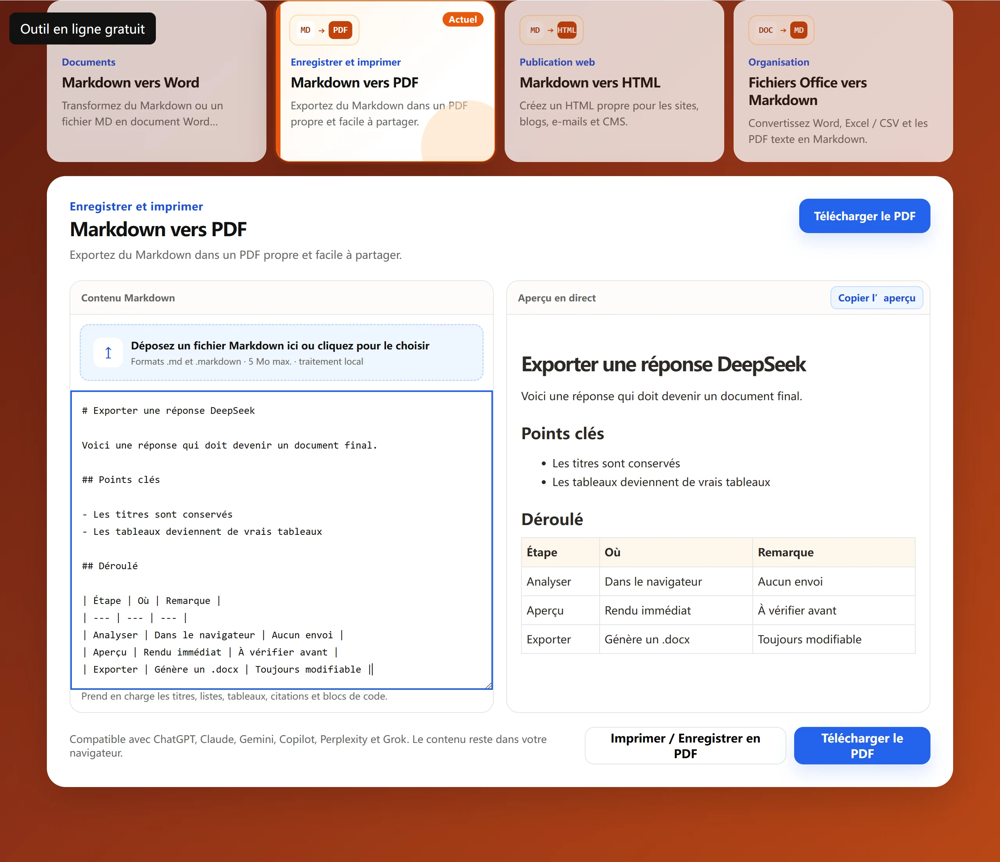

IA vers PDF
Convertir une réponse d’IA en PDF
Le PDF est utile quand un rapport, un plan d’étude ou un plan détaillé généré par IA a besoin d’une mise en page stable pour être partagé, imprimé ou archivé.

Trois étapes
- Copiez la réponse de l’IA avec ses titres et ses listes.
- Collez-la dans Markdown vers PDF et examinez l’aperçu.
- Téléchargez le PDF et vérifiez les sauts de page avant de partager.
Quand le PDF est le bon choix
- Envoyer un rapport en lecture seule à un client ou un collègue.
- Archiver des notes de recherche avec une mise en page constante.
- Imprimer un guide d’étude, une checklist ou un compte rendu de réunion.
Limites à examiner
Les tableaux très larges, les schémas, les images distantes et les longues lignes de code peuvent demander des ajustements. Si des collaborateurs doivent modifier le texte, exportez plutôt en Word.
La conversion s’exécute sur votre appareil. Aixuno ne téléverse pas la réponse collée vers un serveur.
Ce que contient réellement le PDF exporté
- Des pages A4 portrait avec 12 mm de marges latérales, pour un bloc de texte conforme à un rapport standard.
- Un numéro de page au format
1 / 4en bas à droite de chaque page. - Du vrai texte, pas une image : le fichier reste interrogeable et copiable.
Quand le PDF est le mauvais choix
- Le destinataire doit modifier ou commenter : envoyez plutôt du Word.
- La réponse est un brouillon de travail appelé à évoluer.
- Le contenu repose sur des tableaux larges : le PDF ne peut pas les remettre en ligne, les colonnes se compriment.
Comparaison avec les autres méthodes
| Méthode | Texte sélectionnable | Habillage du site retiré | Numéros de page |
|---|---|---|---|
| Imprimer la fenêtre de chat en PDF | Oui | Non — en-têtes et bulles restent | Seulement si le navigateur les ajoute |
| Capture d’écran enregistrée en PDF | Non | Oui | Non |
| Aixuno Markdown vers PDF | Oui | Oui — seul votre contenu est mis en page | Oui, n / total |
Questions sur le PDF obtenu
Le PDF exporté est-il interrogeable ?
Oui. Le résultat est du vrai texte et non une image figée : il peut être recherché et copié.
Puis-je changer le format de page ?
La version actuelle exporte uniquement en A4 portrait. Paysage et marges personnalisées ne sont pas encore disponibles.
Les numéros de page sont-ils ajoutés automatiquement ?
Oui, sous la forme 1 / 4 en bas à droite de chaque page.
Si le PDF n’est pas correct
- Une page est presque vide. Les longues citations ou blocs de code ininterrompus poussent le contenu vers le bas ; découpez-les en paragraphes plus courts.
- Un tableau large est coupé. Le A4 portrait laisse environ 186 mm de contenu. Les tableaux plus larges exigent moins de colonnes, ou un traitement en paysage ailleurs.
- Les polices ont changé. L’export suit le rendu par défaut du navigateur : le PDF correspond à ce que montrait l’aperçu, pas à la police de la plateforme d’origine.